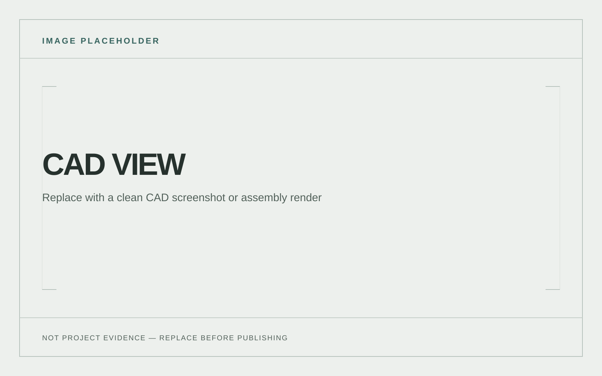
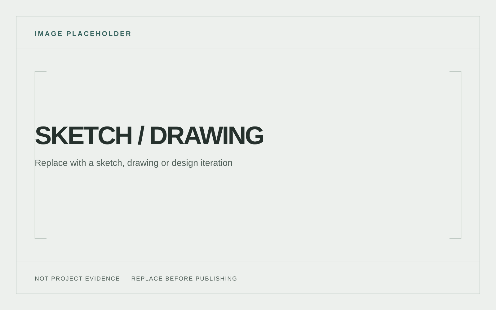
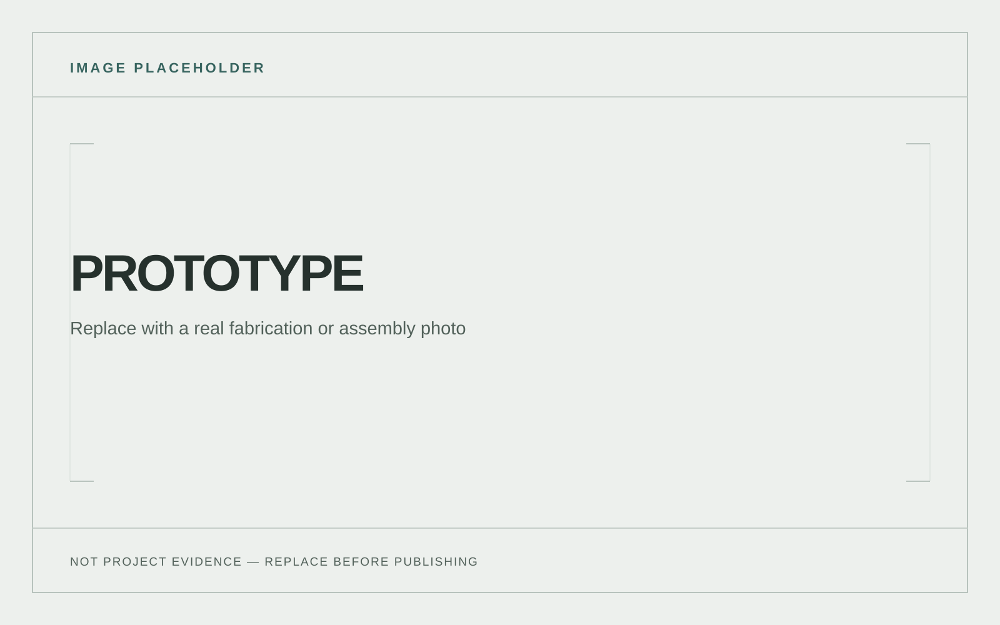
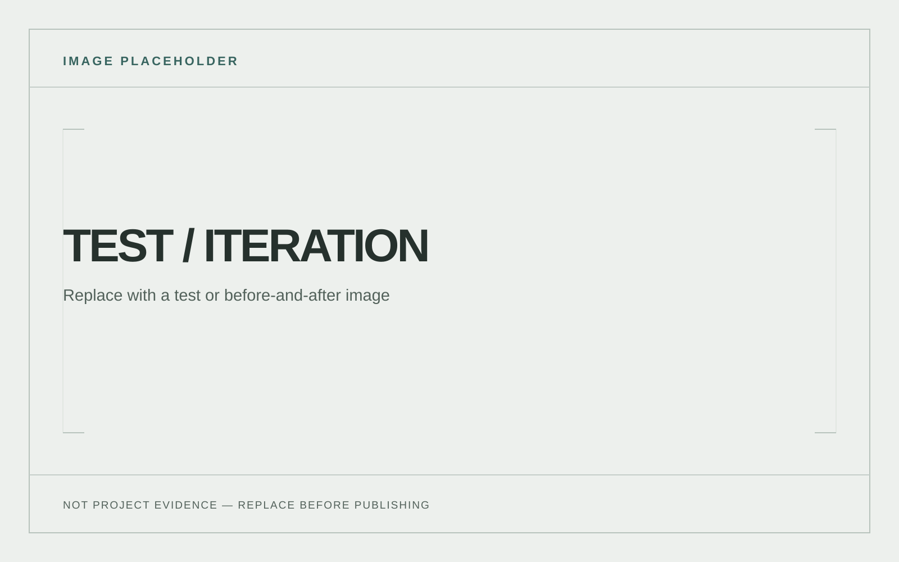

Overview
A practical film prop combining a mechanical wing linkage, servo actuation, Arduino control, sculpting and fabrication. [ADD THE SHOOT CONTEXT, BRIEF AND FINAL BUILD STATUS.]
Problem / objective
[ADD THE REQUIRED MOVEMENT, APPEARANCE, OPERATING CONDITIONS AND PRODUCTION CONSTRAINTS.]
Design requirements
- Create a twitching wing movement with a servo-driven linkage.
- Integrate the mechanism with a sculpted practical prop.
- [ADD SIZE, NOISE, POWER, DURABILITY AND ON-SET CONSTRAINTS.]
Design development
[ADD LINKAGE GEOMETRY, SERVO SELECTION AND HOW THE MOTION WAS TRANSLATED INTO WING MOVEMENT.]


Prototyping / manufacturing
[ADD SCULPTING, ACTUATION, CONTROL AND ASSEMBLY STEPS WITH PHOTOS OF THE MECHANISM.]

Testing & iteration
[ADD MOTION TESTS, FAILURE MODES, RANGE ADJUSTMENTS AND HOW THE PROP CHANGED BEFORE THE SHOOT.]

Final design / result
[ADD FINAL PROP PHOTOS AND A CONCISE DESCRIPTION OF THE DEMONSTRATED MOTION.]

My contribution
[STATE WHICH LINKAGE, CAD, ARDUINO, FABRICATION AND SCULPTING WORK YOU PERSONALLY COMPLETED; CREDIT OTHER CREW MEMBERS.]